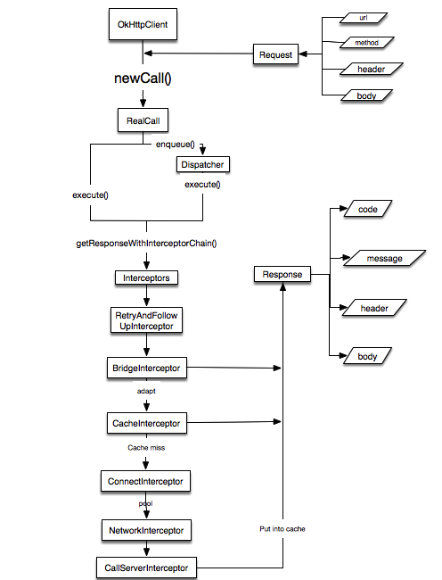

引言
本文主要分析OkHttp3的原理。其有很多特点:
HTTP/2支持所有面向相同主机的请求共享一个Socket- 连接池减少请求时间
- 透明的
GZIP压缩下载大小 - 响应缓存避免重复的请求
用法
同步
异步
源码分析
OkHttpClient
newCall
Dispatcher异步请求策略
获取响应时，会依次添加需要使用的Interceptor，其内部默认使用了RetryAndFollowUpInterceptor(重试拦截器),BridgeInterceptor(桥拦截器，将应用层请求发到网络层),缓存拦截器,ConnectInterceptor(连接拦截器),CallServerIntercetpor
最终请求会通过RealInterceptorChain来依次经过拦截器处理
RealInterceptorChain
里面主要做的工作是，将拦截器取出，处理相应的请求.因此我们主要需要关注拦截器的具体实现
拦截器(Interceptor)
RetryAndFollowUpInterceptor
最大重试20次
主要做的工作是：
- 将请求放入拦截器中进行筛选
- 调用
followUpRequest处理响应头。判断请求是否有效 - 处理完所有的头信息，返回新的请求
- 如果新的请求为无效，直接返回之前的响应
BridgeInterceptor
主要的工作：
- 将应用层用户的请求转化为网络层请求
CacheInterceptor
主要工作：
- 如果缓存存在从缓存中拿出响应
- 使用
CacheStragegy来决定缓存是否有效 - 判断缓存响应和网络响应是否合法,如果网络最后修改时间小于缓存有效
- 从缓存中取出缓存响应，合并网络响应头和缓存响应头
- 更新缓存
- 保存缓存
ConnectInterceptor
主要工作:
- 使用
StreamAllocation连接网络
CallServerInterceptor
StreamAllocation
真正管理连接的地方
流程图

缓存
采用DiskLruCache来缓存请求和响应
写入缓存put
主要功能：
- 检查请求类型，如果不是
Get，不缓存 - 使用
Request的url作为key来缓存 - 写入缓存
更新缓存update
主要工作：
- 获取缓存快照编辑器
- 将网络响应写入